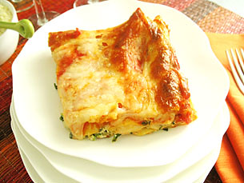

Lasagna Recipe

Decrisption
This recipe will teach you how to make delicious cheese lasagna with only a few simple ingredients.
Ingredients
- 1 (16 ounce) package lasagna noodles
- 4 cups ricotta cheese
- 4 eggs
- 1/4 cup grate Parmesan cheese
- salt and pepper to taste
- 1 teaspoon olive oil
- 3 cloves garlic, minced
- 1 (32 ounce) jar spaghetti sauce
- 1 teaspoon Italian seasoning
- 2 cups shredded mozzarella cheese
Steps
- Preheat the oven to 350 degrees F (175 degrees C).
- Bring a large pot of lightly salted water to a boil. Add lasagna noodles and cook for 8 to 10 minutes or until al dente; draing and lay noodles flat on foil to cool.
- Mix ricotta, eggs, Parmesan cheese, salt, and pepper together in a bowl; mix well.
- Spread 1/2 cup of sauce on the bottom of a 9X13-inch baking dish. Cover with a layer of noodles. Spread 1/2 of the ricotta mixture over noodles; top with another layer of noodles. Pour 1 1/2 cups of sauce over noodles and spread the remaining ricotta over the sauce. Top with remaining noodles and sauce; sprinkle with remaining mozzarella. Cover with a greased sheet of foil.
- Bake in the preheated oven until cheese is melted and bubbly, about 45 minutes.